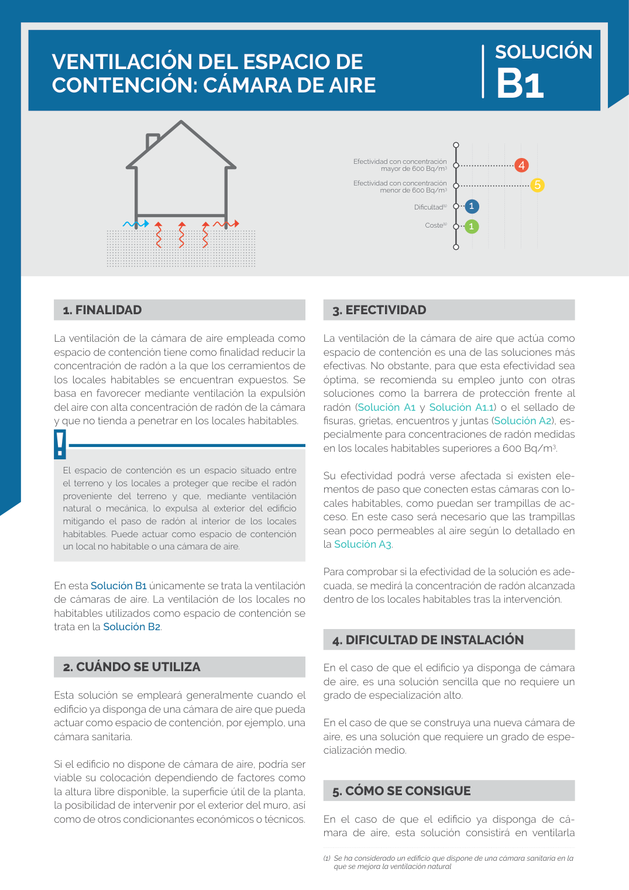

<!doctype html>
<html lang="es"><head><meta charset="utf-8">
<meta name="viewport" content="width=device-width, initial-scale=1">
<title>GUIA · Página física 1</title><link rel="stylesheet" href="../estilo.css">
</head><body>
<nav><a href="../index.html">Índice</a> › <a href="../doc/guia-pdf-064012f7a12a-sin-fecha-b78448d0a375.html">GUIA</a></nav>

<h1>GUIA · Página física 1</h1>
<header class="meta"><p><strong>Solucion B1 Ventilacion del espacio de contencion camara de aire</strong> · edición sin-fecha · capa guia</p>
<p>Documento <code>GUIA-PDF-064012f7a12a</code> · SHA-256 del PDF <code>b78448d0a375f9e7c0c436e93ac99588913afe934ff10824f8413d3918b0e9c7</code></p>
<p>Página física 1 de 6.</p>
<p><a href="../../contenido/docs/GUIA-PDF-064012f7a12a/sin-fecha__b78448d0a375/fuente.pdf#page=1">Copia fiel del PDF fuente</a> · <a href="https://www.codigotecnico.org/pdf/GuiasyOtros/GuiaRadon/Solucion_B1_Ventilacion_del_espacio_de_contencion_camara_de_aire.pdf">Fuente oficial</a></p>
<p><a href="https://www.codigotecnico.org/Guias/GuiaRadon.html">Ficha de la disposición en la fuente oficial</a></p>
<div class="cita"><p><a href="../../contenido/docs/GUIA-PDF-064012f7a12a/sin-fecha__b78448d0a375/fuente.pdf#page=6">Créditos y autoría en el PDF fuente</a>. Reproducción con cita de fuente y autores.</p>
<p>Permiso literal: Se permite la reproducción total o parcial del contenido de este do­ Edición actual: septiembre 2020 cumento siempre y cuando se cite la fuente original y a sus autores.</p>
<details><summary>Leer los créditos completos y la autoría</summary><pre class="literal">                                  Solución B1 • Ventilación del espacio de contención: cámaras de aire   B1  66


                                                                     Este documento ha sido elaborado por el Instituto de ciencias
                                                         de la construcción Eduardo Torroja (IETcc) bajo la supervisión
                                                         de la Dirección General de Agenda Urbana y Arquitectura del
                                                                             Ministerio de Transportes, Movilidad y Agenda Urbana (MITMA).

                                                             SECRETARÍA GENERAL DE
                                                  AGENDA URBANA                                                                     Y VIVIENDA                              MINISTERIO            GOBIERNO                                                                              El IETcc, perteneciente al Consejo Superior de Investigaciones                          DE                               TRANSPORTES,                                          MOVILIDAD
            DE ESPAÑA      Y                         AGENDA                                URBANA                                                        DIRECCIÓN                                                                GENERAL                                                                      DE
                                                  AGENDA URBANA Y ARQUITECTURA                   Científicas (CSIC), es el centro de investigación en edificación
                                                         de referencia en España. La Unidad de Calidad en la Construc­
                                                                       ción del IETcc asesora al MITMA en la elaboración del Código
                              MINISTERIO            GOBIERNO                         DE                               CIENCIA                                             Técnico de la Edificación que, desde el año 2019, cuenta con la            DE ESPAÑA                                E INNOVACIÓN
                                                                   sección HS6 Protección frente a la exposición al radón.

                                                                    Dirección y Coordinación:
                                                                            Ministerio de Transportes, Movilidad y Agenda Urbana
Esta ficha forma parte de una serie de documentos englobados        Isabel Marcos Anasagasti
en una misma publicación, cuyo objetivo es constituir una he­       Raquel Lara Campos
rramienta de ayuda para el diseño de soluciones de protección       Eduardo González de Prado
frente al radón:                                                                  Instituto de ciencias de la construcción Eduardo Torroja CSIC
                                                                                      Pilar Linares Alemparte
■  Guía de rehabilitación frente al radón

Fichas de soluciones:                                                 Autoras:
                                                                                      Pilar Linares Alemparte
A: De aislamiento del edificio                                                                   Sonia García Ortega
■       Solución A1. Barrera frente al radón                                  Virginia Sánchez Ramos
■       Solución A1-1. Barrera frente al radón. Encuentros
■       Solución A2. Sellado de fisuras, grietas, encuentros y juntas      Colaboradoras:
■       Solución A3. Puertas estancas                                   Karina Angélica García Pardo
■       Solución A4. Creación de sobrepresión
                                                                               Edita:
B: De reducción del radón antes de que penetre en los locales       Centro de Publicaciones Secretaría General Técnica
  a proteger                                                               Ministerio de Transportes, Movilidad y Agenda Urbana©

■       Solución B1. Ventilación del espacio de contención: cá­                                                                  Entidad colaboradora:
                 mara de aire                                                                Consejo Superior de Investigaciones Científicas · CSIC
■       Solución B2. Ventilación del espacio de contención: loca­                                                                             Ministerio de Ciencia e Innovación
                      les no habitables
■       Solución B3. Despresurización del terreno                        Catálogo de publicaciones de la Administración General
                                                                         del Estado: publicacionesoficiales.boe.es
C: De reducción del radón tras penetrar en los locales a proteger
■       Solución C1. Ventilación de los locales habitables                  Centro virtual de publicaciones del Ministerio de Transpor­
                                                                                         tes, Movilidad y Agenda Urbana: www.mitma.gob.es

Fichas de ejemplos:
                                                                     Página web del Código Técnico de la Edificación:
■      Ejemplo A1+B3. Barrera frente al radón + despresurización          www.codigotecnico.org
                    con red de tubos
■      Ejemplo A2+B1. Sellado + ventilación de la cámara sanitaria      Maquetación y diseño gráfico:
■      Ejemplo A2+B3. Sellado + despresurización con red de tubos       Lapizmente. Estrategia • Diseño Gráfico
■      Ejemplo A2+C1. Sellado + ventilación mecánica de los loca-                                                                     Los contenidos o ideas recogidas en este documento pertenecen a
                          les habitables                                   sus autores. Este documento está basado en el conocimiento dispo­
                                                                                    nible en el momento de su publicación. No se aceptará por las institu­
Publicación completa:                                                    ciones ni los autores implicados responsabilidad de ningún tipo por el
ISBN: 978-84-498-1045-9                                             uso de estas recomendaciones. Las figuras tienen carácter ilustrativo
NIPO: 796-20-136-5                                                   y no deben interpretarse como detalles constructivos.
1ª edición: septiembre 2020                                                               Se permite la reproducción total o parcial del contenido de este do­
Edición actual: septiembre 2020                                    cumento siempre y cuando se cite la fuente original y a sus autores.</pre></details></div>
<div class="aviso"><strong>Alcance y límites</strong><ul><li>Extracción automática sin revisión técnica humana completa. Contraste tablas, fórmulas, notas y excepciones con el PDF. La edición disponible no determina la vigencia ni la aplicabilidad a un proyecto.</li><li>Guia o documento divulgativo; no es texto normativo.</li><li>Extracción automática; el cotejo humano está pendiente.</li><li>Semántica y tablas no equivalen a validación exhaustiva.</li></ul></div></header>
<nav><a href="guia-pdf-064012f7a12a-sin-fecha-b78448d0a375__p0002.html">Página 2 →</a></nav>
<p>Formato: <a href="../../contenido/docs/GUIA-PDF-064012f7a12a/sin-fecha__b78448d0a375/pagina/p0001.md">Texto de la página (Markdown)</a></p>
<p><a href="../../contenido/docs/GUIA-PDF-064012f7a12a/sin-fecha__b78448d0a375/bloque/p0001.json">JSON de bloques</a></p>
<pre class="literal">Efectividad con concentración 
mayor de 600 Bq/m3
Efectividad con concentración 
menor de 600 Bq/m3
Dificultad(1)
Coste(1)
4
5
1
1
VENTILACIÓN DEL ESPACIO DE 
CONTENCIÓN: CÁMARA DE AIRE
SOLUCIÓN
B1
3. EFECTIVIDAD
La ventilación de la cámara de aire que actúa como 
espacio de contención es una de las soluciones más 
efectivas. No obstante, para que esta efectividad sea 
óptima, se recomienda su empleo junto con otras 
soluciones como la barrera de protección frente al 
radón (Solución A1 y Solución A1.1) o el sellado de 
fisuras, grietas, encuentros y juntas (Solución A2), es­
pecialmente para concentraciones de radón medidas 
en los locales habitables superiores a 600 Bq/m3.
Su efectividad podrá verse afectada si existen ele­
mentos de paso que conecten estas cámaras con lo­
cales habitables, como puedan ser trampillas de ac­
ceso. En este caso será necesario que las trampillas 
sean poco permeables al aire según lo detallado en 
la Solución A3.
Para comprobar si la efectividad de la solución es ade­
cuada, se medirá la concentración de radón alcanzada 
dentro de los locales habitables tras la intervención.
4. DIFICULTAD DE INSTALACIÓN
En el caso de que el edificio ya disponga de cámara 
de aire, es una solución sencilla que no requiere un 
grado de especialización alto.
En el caso de que se construya una nueva cámara de 
aire, es una solución que requiere un grado de espe­
cialización medio.
5. CÓMO SE CONSIGUE
En el caso de que el edificio ya disponga de cá­
mara de aire, esta solución consistirá en ventilarla
1. FINALIDAD
La ventilación de la cámara de aire empleada como 
espacio de contención tiene como finalidad reducir la 
concentración de radón a la que los cerramientos de 
los locales habitables se encuentran expuestos. Se 
basa en favorecer mediante ventilación la expulsión 
del aire con alta concentración de radón de la cámara 
y que no tienda a penetrar en los locales habitables.
El espacio de contención es un espacio situado entre 
el terreno y los locales a proteger que recibe el radón 
proveniente del terreno y que, mediante ventilación 
natural o mecánica, lo expulsa al exterior del edificio 
mitigando el paso de radón al interior de los locales 
habitables. Puede actuar como espacio de contención 
un local no habitable o una cámara de aire.
En esta Solución B1 únicamente se trata la ventilación 
de cámaras de aire. La ventilación de los locales no 
habitables utilizados como espacio de contención se 
trata en la Solución B2.
2. CUÁNDO SE UTILIZA
Esta solución se empleará generalmente cuando el 
edificio ya disponga de una cámara de aire que pueda 
actuar como espacio de contención, por ejemplo, una 
cámara sanitaria.
Si el edificio no dispone de cámara de aire, podría ser 
viable su colocación dependiendo de factores como 
la altura libre disponible, la superficie útil de la planta, 
la posibilidad de intervenir por el exterior del muro, así 
como de otros condicionantes económicos o técnicos.
(1)  Se ha considerado un edificio que dispone de una cámara sanitaria en la 
que se mejora la ventilación natural
</pre>
<figure><a href="../../contenido/docs/GUIA-PDF-064012f7a12a/sin-fecha__b78448d0a375/figura/p0001.png"></a><figcaption>Página visual 1, para contrastar fórmulas, tablas y figuras.</figcaption></figure><h2>Tablas extraídas</h2><p>Datos candidatos: compruebe celdas y notas en el PDF.</p><ul><li><a href="../../contenido/docs/GUIA-PDF-064012f7a12a/sin-fecha__b78448d0a375/tabla/p0001_t01.json">p0001_t01.json</a></li></ul>
<h2>Segmentos que incluyen esta página</h2><ul>
<li><a href="../apartado/guia-pdf-064012f7a12a-sin-fecha-b78448d0a375__a0001.html">a0001 · Portada y páginas previas</a></li>
<li><a href="../apartado/guia-pdf-064012f7a12a-sin-fecha-b78448d0a375__a0002.html">a0002 · Portada y páginas previas / VENTILACIÓN DEL ESPACIO DE CONTENCIÓN: CÁMARA DE AIRE</a></li>
<li><a href="../apartado/guia-pdf-064012f7a12a-sin-fecha-b78448d0a375__a0003.html">a0003 · Portada y páginas previas / SOLUCIÓN</a></li>
<li><a href="../apartado/guia-pdf-064012f7a12a-sin-fecha-b78448d0a375__a0004.html">a0004 · 3. EFECTIVIDAD</a></li>
<li><a href="../apartado/guia-pdf-064012f7a12a-sin-fecha-b78448d0a375__a0005.html">a0005 · 4. DIFICULTAD DE INSTALACIÓN</a></li>
<li><a href="../apartado/guia-pdf-064012f7a12a-sin-fecha-b78448d0a375__a0006.html">a0006 · 5. CÓMO SE CONSIGUE</a></li>
<li><a href="../apartado/guia-pdf-064012f7a12a-sin-fecha-b78448d0a375__a0007.html">a0007 · 1. FINALIDAD</a></li>
<li><a href="../apartado/guia-pdf-064012f7a12a-sin-fecha-b78448d0a375__a0008.html">a0008 · 2. CUÁNDO SE UTILIZA</a></li>
</ul>
<footer>Generado estáticamente desde el corpus normalizado; sin JavaScript ni servicios externos. El HTML es una vista reproducible; conserve la fuente y la edición al citar.</footer>
</body></html>
